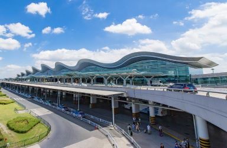
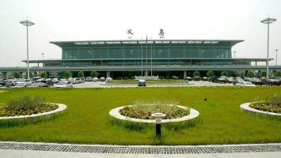

浙江机场
在浙江境内，共分布有10个民航机场，分别是杭州萧山国际机场、宁波栎社国际机场、温州龙湾国际机场、嘉兴机场、义乌机场、衢州机场、丽水机场、舟山普陀山机场和台州路桥机场、横店通用机场。

杭州萧山国际机场
杭州萧山国际机场
位于浙江省杭州市萧山区，距市中心27公里，为4F级民用运输机场，是中国十二大干线机场之一、国际定期航班机场、对外开放的一类航空口岸和国际航班备降机场。杭州萧山国际机场是由原杭州笕桥机场民航部分异地搬迁新建，工程于1997年7月正式动工，2000年12月建成通航。2007年11月，二期工程正式开工建设，2012年12月建成投运。是杭州第二座民航机场，是华东地区重要的干线机场、国际定期航班机场、对外开放的一类航空口岸和国际航班备降机场，2015年成为世界百强机场、中国十大机场，中国四大航空口岸。年旅客吞吐量排名、年货邮吞吐量排名、年飞机起降量排名均位于全国前十。

义乌机场